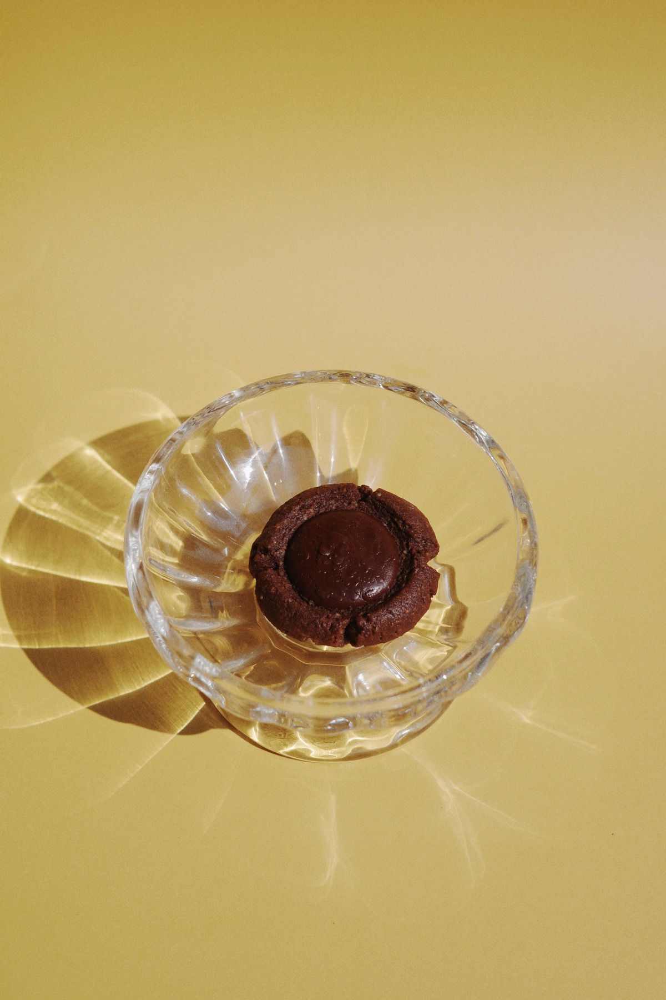

Chocolate Cookies
可可香氣裡，藏著慢慢烘烤的耐心。
使用深色可可與堅果調和出成熟風味，適合咖啡、下午茶，也適合送給喜歡微苦甜的人。

Texture
深色、酥香、帶一點大人的苦甜。
這一頁用暗調照片做主軸，讓巧克力餅乾的濃度與手作邊緣成為視覺重點。

Chocolate Cookies
使用深色可可與堅果調和出成熟風味，適合咖啡、下午茶，也適合送給喜歡微苦甜的人。
Texture
這一頁用暗調照片做主軸，讓巧克力餅乾的濃度與手作邊緣成為視覺重點。
